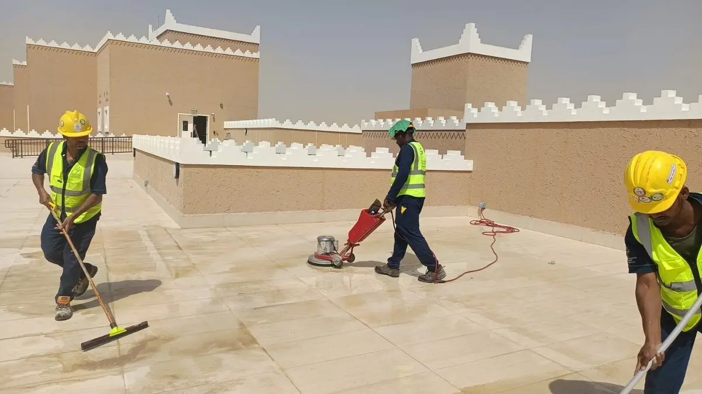
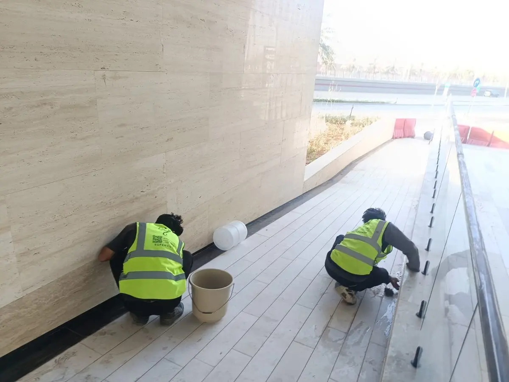

تترك أعمال الترميم والتجديد في المنازل والفلل بالرياض آثاراً واضحة من بقايا الطلاء والغراء والأسمنت والجبس، وهي آثار تحتاج تنظيفاً متخصصاً يختلف تماماً عن التنظيف اليومي المعتاد. ولهذا يبحث أصحاب البيوت المرممة حديثاً عن شركة تنظيف بالرياض تمتلك خبرة في التعامل مع هذا النوع الدقيق من التنظيف. وتُعد شركة حلول وتميز لخدمات التنظيف من الشركات المتخصصة في تجهيز البيوت المرممة بالكامل قبل انتقال أصحابها إليها.
ومع تزايد أعمال الترميم والتجديد في منازل وفلل الرياض، أصبح البحث عن شركة تنظيف منازل وفلل بالرياض قادرة على إزالة بقايا الطلاء والغراء والأسمنت من الأرضيات دون خدشها أمراً أساسياً لدى أصحاب هذه المنازل. وتقدم شركة حلول وتميز لخدمات التنظيف حلاً متكاملاً يشمل كل ركن في المنزل من الأرضيات حتى الزوايا والنوافذ.
وتحرص شركة حلول وتميز لخدمات التنظيف على استخدام أدوات ومحاليل مخصصة لكل نوع من هذه البقايا، بما يليق بمستوى شركة تنظيف بالرياض الرائدة في هذا المجال. وتسعى شركة تنظيف بالرياض دائماً لتقديم نتيجة تليق بمستوى الترميم الذي خضع له المنزل.
فريق شركة تنظيف بالرياض أثناء جلي أرضية ممر خارجي في منزل مرمم حديثاً لإزالة آثار الأسمنت والطلاء
ما هي خدمة تنظيف البيوت المرممة حديثاً؟
يُقصد بهذه الخدمة التنظيف الشامل للمنزل بعد انتهاء أعمال الترميم والتجديد مباشرة، بهدف إزالة كل أثر لمواد الطلاء والغراء والأسمنت والجبس المتبقية من العمال. وتحرص شركة تنظيف بالرياض المتخصصة على تنفيذ هذه المرحلة بدقة عالية قبل انتقال أصحاب المنزل إليه.
وتشمل خدمات شركة تنظيف منازل وفلل بالرياض التي تقدمها حلول وتميز:
- إزالة آثار الطلاء والبويا عن الأرضيات والجدران والزجاج
- إزالة بقايا الغراء المتصلب عن الأرضيات والسيراميك
- إزالة بقع الأسمنت المتيبسة عن الأرضيات والدرج
- تنظيف بقايا الجبس من الزوايا وحواف النوافذ
- جلي وتلميع الأرضيات بعد إزالة جميع الآثار المتبقية
ولا تقتصر خدمات شركة تنظيف بالرياض على الأرضيات فقط، بل تشمل أيضاً الزوايا والنوافذ التي تتراكم فيها بقايا الجبس أثناء أعمال الترميم. وتعتمد شركة حلول وتميز لخدمات التنظيف على أدوات ومحاليل مخصصة لكل نوع من هذه البقايا دون الإضرار بالتشطيبات الجديدة.
لماذا تحتاج البيوت المرممة لتنظيف متخصص؟
تختلف طبيعة كل نوع من الآثار المتبقية بعد الترميم، وهنا تظهر أهمية التعامل مع شركة تنظيف منازل وفلل بالرياض تمتلك أدوات ومحاليل مناسبة لكل نوع على حدة.
بقايا الطلاء والبويا على الأسطح
تترك أعمال الدهان بقعاً وقطرات طلاء متناثرة على الأرضيات والزجاج والأسطح المحيطة، وهي بقع تحتاج إزالة دقيقة دون ترك أي أثر أو خدش. وتلتزم شركة تنظيف بالرياض المتخصصة باستخدام أدوات مناسبة لكل سطح متأثر بهذه البقع.
بقايا الغراء والأسمنت المتيبسة على الأرضيات
تتيبس بقايا الغراء والأسمنت على الأرضيات بعد أعمال التبليط والترميم، وتحتاج هذه البقايا معدات جلي خاصة لإزالتها دون خدش سطح الأرضية. وتستخدم شركة تنظيف منازل وفلل بالرياض ماكينات جلي متخصصة لهذا الغرض.

فريق من عمال شركة حلول وتميز لخدمات التنظيف يجلون أرضية سطح منزل بطراز نجدي بعد أعمال الترميم لإزالة بقايا الأسمنت
بقايا الجبس في الزوايا والنوافذ
تتراكم بقايا الجبس في زوايا الغرف وحول إطارات النوافذ أثناء أعمال التشطيب الداخلي، وهي بقايا تحتاج تنظيفاً دقيقاً بأدوات صغيرة تصل لكل زاوية. وتحرص شركة حلول وتميز لخدمات التنظيف على تنظيف كل زاوية ونافذة بعناية فائقة.
خطوات تنظيف البيت بعد الترميم
تعتمد شركة تنظيف بالرياض على منهجية عمل واضحة عند تنفيذ أي مشروع تنظيف بعد الترميم، تضمن تغطية كل ركن في المنزل دون إغفال أي تفصيلة.
- معاينة المنزل وتحديد أنواع البقايا المتراكمة (طلاء، غراء، أسمنت، جبس)
- إزالة بقايا الطلاء والبويا عن الأرضيات والزجاج والأسطح
- جلي الأرضيات بماكينات متخصصة لإزالة بقايا الغراء والأسمنت
- تنظيف الزوايا وحواف النوافذ من بقايا الجبس بأدوات دقيقة
- تلميع نهائي للأرضيات بعد إزالة جميع الآثار المتبقية
- فحص شامل للمنزل بالكامل قبل تسليمه جاهزاً للسكن
وبفضل هذه الخطوات المدروسة، رسخت شركة حلول وتميز لخدمات التنظيف اسمها كخيار أول لدى أصحاب المنازل الباحثين عن شركة تنظيف منازل وفلل بالرياض تجمع بين الدقة والشمولية في هذه المرحلة الحساسة.
💡 ملاحظة مهمة: لا يُنصح بمحاولة إزالة بقايا الأسمنت أو الغراء المتيبسة بأدوات حادة أو كاشطة، لأن ذلك قد يترك خدوشاً دائمة على الأرضية. ويُفضل التعامل مع شركة تنظيف بالرياض تمتلك ماكينات جلي متخصصة مثل شركة حلول وتميز لخدمات التنظيف لضمان نتيجة آمنة على الأرضية.
إزالة آثار الطلاء والأسمنت من الأرضيات
تحتاج الأرضيات بعد أعمال الترميم إلى معاملة خاصة لإزالة بقايا الطلاء والأسمنت دون التأثير على لمعانها الطبيعي. وتوفر شركة تنظيف منازل وفلل بالرياض معدات جلي مناسبة لكل نوع من أنواع الأرضيات.
- إزالة قطرات وبقع الطلاء المتناثرة على الأرضيات الرخامية والبورسلين
- جلي الأرضيات لإزالة بقايا الأسمنت المتيبسة من أعمال التبليط
- إزالة بقايا الغراء من فواصل البلاط دون التأثير على المونة
- تلميع نهائي يعيد للأرضية لمعانها الأصلي بعد الترميم

عاملان من فريق شركة حلول وتميز لخدمات التنظيف ينظفان قاعدة الجدار والأرضية من بقايا مواد البناء بعد أعمال الترميم
تنظيف الزوايا والنوافذ من بقايا الجبس
تحتاج زوايا الغرف والنوافذ إلى تنظيف دقيق بعد أعمال الترميم، حيث تتراكم بقايا الجبس والمعجون في هذه الأماكن الضيقة. وتعتمد شركة تنظيف بالرياض على أدوات صغيرة الحجم للوصول لكل زاوية.
- إزالة بقايا الجبس المتصلبة من زوايا الغرف والأسقف
- تنظيف حواف النوافذ من بقايا المعجون والدهان
- تنظيف إطارات الأبواب من بقايا مواد التشطيب
- فحص كل زاونة للتأكد من إزالة جميع البقايا المتبقية
وتحرص شركة حلول وتميز لخدمات التنظيف على تخصيص وقت كافٍ لهذه المرحلة الدقيقة، لأنها من أكثر المراحل التي تحتاج صبراً وعناية فائقة في تنظيف المنازل المرممة.
أدوات ومعدات التنظيف بعد الترميم
تعتمد شركة تنظيف منازل وفلل بالرياض على مجموعة من الأدوات والمعدات المتخصصة للتعامل مع مختلف أنواع البقايا بعد الترميم.
ماكينات جلي الأرضيات
تزيل بقايا الأسمنت والغراء المتيبسة دون خدش سطح الأرضية.
محاليل إزالة الطلاء الآمنة
تذيب بقع الطلاء والبويا دون التأثير على لون السطح الأصلي.
أدوات تنظيف الزوايا الدقيقة
تصل لأصغر الزوايا والفواصل لإزالة بقايا الجبس بالكامل.
مواد تلميع الأرضيات النهائية
تُستخدم بعد إزالة جميع البقايا لإعادة اللمعان الطبيعي.
وبفضل هذا التنوع في الأدوات، تمكنت شركة حلول وتميز لخدمات التنظيف من تجهيز عشرات المنازل المرممة في الرياض بجودة عالية قبل انتقال أصحابها إليها.
مقارنة بين التنظيف العادي والتنظيف بعد الترميم
| المعيار | التنظيف اليومي العادي | التنظيف بعد الترميم |
|---|---|---|
| نوع الأوساخ | أتربة وبقع خفيفة يومية | بقايا طلاء وغراء وأسمنت وجبس متيبسة |
| المعدات المطلوبة | أدوات تنظيف عادية | ماكينات جلي ومحاليل إزالة متخصصة |
| الوقت اللازم | قصير نسبياً | أطول حسب حجم المنزل ودرجة البقايا |
| مستوى الدقة | عام وسريع | دقيق جداً في الزوايا والحواف |
وتساعد هذه المقارنة أصحاب المنازل المرممة على فهم أهمية التعامل مع شركة تنظيف بالرياض متخصصة في هذه المرحلة، حيث تحرص شركة حلول وتميز لخدمات التنظيف على تخصيص وقت كافٍ لكل تفصيلة.
عوامل تحديد تكلفة تنظيف البيوت المرممة حديثاً
تختلف تكلفة الخدمة حسب عدة عوامل، وتحرص شركة حلول وتميز لخدمات التنظيف على معاينة المنزل ميدانياً قبل تحديد السعر النهائي.
- مساحة المنزل وعدد الغرف والطوابق
- كمية بقايا الطلاء والغراء والأسمنت المطلوب إزالتها
- نوع الأرضية المستخدمة في المنزل (رخام، بورسلين، سيراميك)
- مدى الحاجة لجلي شامل للأرضيات بعد التنظيف
وتوفر شركة تنظيف منازل وفلل بالرياض عروض أسعار واضحة بعد المعاينة المباشرة، مع الالتزام الكامل بموعد التسليم المتفق عليه.
مناطق تغطية خدمة تنظيف البيوت المرممة في الرياض
تغطي شركة تنظيف بالرياض جميع الأحياء السكنية في العاصمة، نظراً لتزايد أعمال الترميم والتجديد في منازل وفلل الرياض باستمرار.
ويتيح هذا الانتشار الواسع لفريق شركة تنظيف منازل وفلل بالرياض الاستجابة السريعة لأي طلب في مختلف مناطق الرياض، سواء كان منزلاً صغيراً أو فيلا كبيرة بعد ترميم شامل.
لماذا يثق أصحاب البيوت المرممة بفريق حلول وتميز؟
اكتسب فريق شركة حلول وتميز لخدمات التنظيف خبرة عملية واسعة في تجهيز المنازل والفلل بعد الترميم في الرياض على مدار سنوات من العمل الميداني.
ويحرص الفريق على التعامل بدقة مع كل نوع من البقايا، سواء كانت طلاءً أو غراءً أو أسمنتاً أو جبساً، دون الإضرار بالتشطيبات الجديدة للمنزل.
ومن أبرز ما يميز التعامل مع شركة تنظيف بالرياض المتخصصة أيضاً هو الصبر والدقة في تنظيف الزوايا والنوافذ التي يغفلها التنظيف العادي عادة.
ولهذا يفضل عدد كبير من أصحاب المنازل في الرياض التعاقد بشكل مستمر مع شركة تنظيف منازل وفلل بالرياض واحدة موثوقة لكل مشاريع الترميم الجديدة. وتحرص شركة حلول وتميز لخدمات التنظيف على تسليم المنزل جاهزاً بالكامل للسكن الفوري.
معايير اختيار شركة تنظيف موثوقة للبيوت المرممة حديثاً
قبل التعاقد مع أي جهة لتنفيذ تنظيف المنزل بعد الترميم، من المهم التأكد من عدة معايير أساسية تضمن جودة التنفيذ. وتحرص شركة تنظيف منازل وفلل بالرياض موثوقة مثل حلول وتميز على توضيح هذه المعايير لعملائها.
- فريق مدرب على إزالة بقايا الطلاء والغراء دون خدش الأسطح
- معدات جلي احترافية للأرضيات الرخامية والبورسلين
- الصبر والدقة في تنظيف الزوايا والنوافذ الصغيرة
- سجل أعمال سابق في تجهيز منازل مرممة مماثلة في الرياض
ويساعد الالتزام بهذه المعايير أصحاب المنازل في اختيار شركة تنظيف بالرياض مناسبة، بدلاً من الاعتماد على عمالة غير مدربة قد تترك آثاراً باقية أو خدوشاً على الأرضيات.
الأسئلة الشائعة حول تنظيف البيوت المرممة حديثاً
الخاتمة
إذا كنت قد أنهيت مؤخراً أعمال ترميم أو تجديد في منزلك وتبحث عن أفضل شركة تنظيف بالرياض تزيل جميع آثار الطلاء والغراء والأسمنت والجبس، فإن شركة حلول وتميز لخدمات التنظيف توفر لك الحل الأمثل لتجهيز منزلك بالكامل للسكن الفوري.
سواء كان منزلك صغيراً أو فيلا كبيرة متعددة الطوابق، فإن فريق شركة تنظيف منازل وفلل بالرياض يمتلك المعدات والخبرة الكافية لتنظيف كل ركن من أرضياتك حتى أصغر زاوية في النوافذ.
كما تقدم شركة حلول وتميز لخدمات التنظيف خدمات متكاملة تشمل إزالة بقايا الترميم وجلي الأرضيات وتنظيف الزوايا الدقيقة، مع الالتزام الكامل بمعايير الجودة في كل مشروع.
وتواصل شركة تنظيف بالرياض تقديم خدماتها في جميع أحياء العاصمة، بينما يواصل فريق شركة تنظيف منازل وفلل بالرياض تجهيز المنازل المرممة حديثاً بالتزام كامل من شركة حلول وتميز لخدمات التنظيف بالجودة في كل تفصيلة.
وفي النهاية، يبقى المنزل النظيف الخالي من أي أثر لأعمال الترميم انطباعاً حقيقياً على جودة الإنجاز النهائي. ولهذا فإن الاستعانة بـ شركة حلول وتميز لخدمات التنظيف تعني الانتقال إلى منزل جاهز تماماً دون أي عناء إضافي. لمزيد من الاستفسارات أو لحجز موعد تنظيف منزلك بعد الترميم، يمكن التواصل مباشرة عبر الاتصال أو الواتساب في أي وقت.